CONFUSION BETWEEN DIFFERENT ILLNESSES THAT CAUSE FEVER
Spanish Name: LA FIEBRE (THE FEVER) Name in Your Area:
Correctly speaking, a fever is a body temperature higher than normal. But in Latin
America, a number of serious illnesses that cause high temperatures are all called la fiebre—or 'the fever’.
To prevent or treat these diseases successfully, it is important to know how to tell one from another.
Here are some of the important acute illnesses in which fever is an outstanding sign.
The drawings show the fever pattern (rise and fall of temperature) that is typical for each disease.
Malaria: (see p. 186)
MALARIA — TYPICAL The solid line shows the rise
FEVER PATTERN
and fall of temperature.
Begins with weakness, chills and fever. Fever may come and go for a few days, with shivering (chills)
as the temperature rises, and sweating as it falls. Then, fever may come for a few hours every second or third day. On other days, the person may feel more or less well.
Days of Illness
Typhoid: (see p. 188)
TYPHOID —
The fever goes up
Begins like a cold. Temperature
TYPICAL FEVER PATTERN
a little each day.
goes up a little more each day.
Pulse relatively slow. Sometimes diarrhea and dehydration.
Trembling or delirium (mind wanders). Person very ill.
Typhus: (see p. 190)
Similar to typhoid. Rash similar to
Days of Illness that of measles, with tiny bruises.
HEPATITIS—
Usually the fever
Hepatitis: (see p. 172)
TYPICAL FEVER PATTERN
is mild.
Person loses appetite. Does not wish to eat or smoke. Wants to vomit (nausea). Eyes and skin turn yellow; urine orange or brown; stools whitish. Sometimes liver becomes large, tender. Mild fever. Person very weak.
Days of Illness
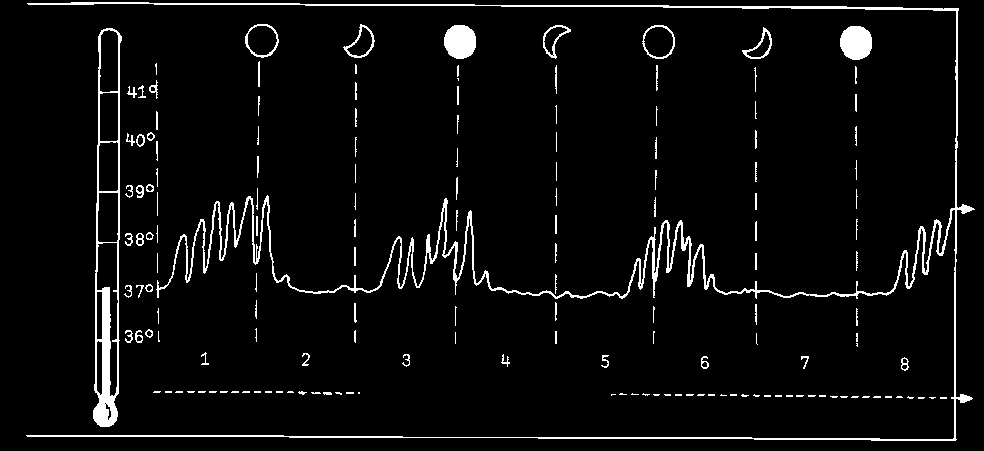
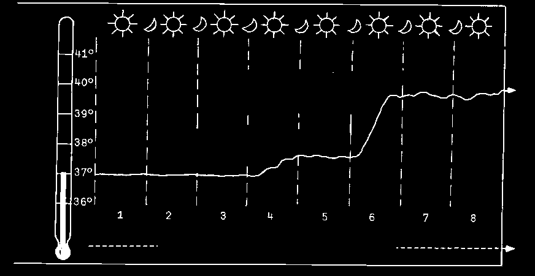
Pneumonia: (see p. 171)
PNEUMONIA — TYPICAL FEVER PATTERN
Fast, shallow breathing.
Temperature rises quickly.
Cough with green, yellow, or bloody mucus. May be pain in chest. Person very ill.
viral infection
Days of Illness
Rheumatic fever: (see p. 310)
RHEUMATIC FEVER-TYPICAL FEVER PATTERN
Most common in children and teenagers. Pain in
First: sudden fever
10 or 15 days later fever joints. High fever. Often with sore throat begins — with joint pain comes after a sore throat.
and other signs.
May be pain in the chest with shortness of breath. Or uncontrolled movements of arms and legs.
Days of Illness
Brucellosis (undulant fever,
BRUCELLOSIS —
Fever comes in waves. Rises in
Malta fever): (see p. 188)
TYPICAL FEVER PATTERN the afternoon and falls at night.
Begins slowly with tiredness, headache, and pains in the bones.
Fever and sweating most common at night. Fever disappears for a few days only to come back again.
Weeks of Illness
This may go on for months or years.
CHILBIRTH FEVER — TYPICAL FEVER PATTERN
Childbirth fever: (see p. 276)
Begins a day or more after giving birth. Starts with a slight person gets worse fever, which often rises later.
and fever rises
Foul-smelling vaginal discharge.
usually begins with
Pain and sometimes bleeding.
low fever
Days following childbirth
All of these illnesses can be dangerous. In addition to those shown here, there are many other diseases that may cause similar signs and fever. For example, fevers that last for more than 1 month, or night sweats, may be caused by HIV infection
(see p. 399). When possible, seek medical help.

CHAPTER
How to Examine a Sick Person
To find out the needs of a sick person, first you must ask important questions and
then examine him carefully. You should look for signs and symptoms that help you
tell how ill the person is and what kind of sickness he may have.
Always examine the person where there is good light, preferably in the sunlight — never in a dark room.
There are certain basic things to ask and to look for in anyone who is sick. These include things the sick person feels or reports (symptoms), as well as things you notice on examining him (signs). These signs can be especially important in babies and persons unable to talk. In this book the word 'signs’ is used for both symptoms and signs.
When you examine a sick person, write down your findings and keep them for the health worker in case he is needed (see p. 44).
QUESTIONS
Start by asking the person about her sickness. Be sure to ask the following:
What bothers you most right now?
What makes you feel better or worse?
How and when did your sickness begin?
Have you had this same trouble before, or has anyone else in your family or neighborhood had it?
Continue with other questions in order to learn the details of the illness.
For example, if the sick person has a pain, ask her:
Where does it hurt? (Ask her to point to the exact place with one finger.)
Does it hurt all the time, or off and on?
What is the pain like? (sharp? dull? burning?)
Can you sleep with the pain?
If the sick person is a baby who still does not talk, look for signs of pain. Notice his movements and how he cries. (For example, a child with an earache sometimes rubs the side of his head or pulls at his ear.)

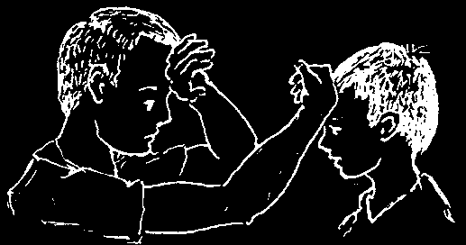
GENERAL CONDITION OF HEALTH
Before touching the sick person, look at him carefully. Observe how ill or weak he looks, the way he moves, how he breathes, and how clear his mind seems. Look for signs of dehydration (see p. 151) and of shock (p. 77).
Notice whether the person looks well nourished or poorly nourished. Has he been losing weight? When a person has lost weight slowly over a long period of time, he may have a chronic illness (one that lasts a long time).
Also note the color of the skin and eyes. These sometimes change when a person is sick. (Dark skin can hide color changes. So look at parts of the body where the skin is pale, such as palms of the hands or soles of the feet, the fingernails, or the insides of the lips and eyelids.)
• Paleness, especially of the lips and inside the eyelids, is a sign of anemia
(p. 124). Skin may also go lighter as a result of tuberculosis (p. 179), or kwashiorkor (p. 113).
• Darkening of the skin may be a sign of starvation (see p. 112).
• Bluish skin, especially blueness or darkness of the lips and fingernails, may mean serious problems with breathing (p. 79, 167, and 313) or with the heart
(p. 325). Blue-gray color in an unconscious child may be a sign of cerebral malaria (p. 186).
• A gray-white coloring, with cool moist skin, often means a person is in shock
(p. 77).
• Yellow color (jaundice) of the skin and eyes may result from disease in the liver
(hepatitis, p. 172, cirrhosis, p. 328, or amebic abscess, p. 145) or gallbladder
(p. 329). It may also occur in newborn babies (p. 274), and in children born with sickle cell disease (p. 321).
Look also at the skin when a light is shining across it from one side. This can show the earliest sign of measles rash on the face of a feverish child (p. 311).
TEMPERATURE
It is often wise to take a sick person’s temperature, even if he does not seem to have a fever. If the person is very sick, take the temperature at least 4 times each day and write it down.
If there is no thermometer, you can get an idea of the temperature by putting the back of one hand on the sick person’s forehead and the other on your own or that of another healthy person. If the sick person has a fever, you should feel the difference.
It is important to find out when and how the fever comes, how long it lasts, and how it goes away. This may help you identify the disease. Not every fever is malaria, though in some countries it is often treated as such. remember other possible causes. For example:
• Common cold, and other virus infections (p. 163). The fever is usually mild.
• Typhoid causes a fever that goes on rising for 5 days. Malaria medicine does not help.
• Tuberculosis sometimes causes a mild fever in the afternoon. At night the person often sweats, and the fever goes down.
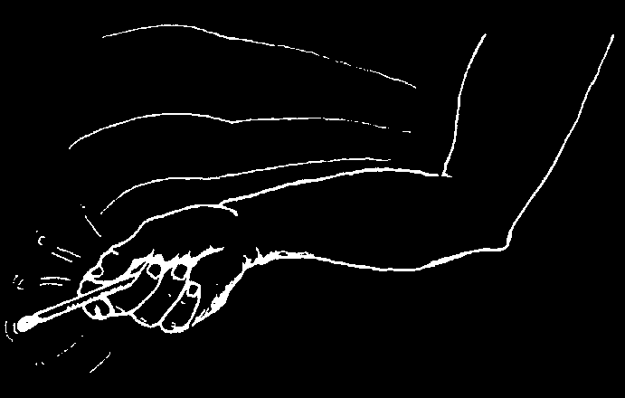

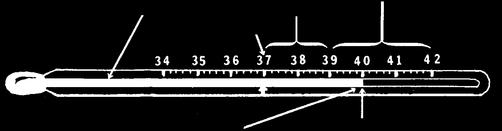
How to Use a Thermometer
Every family should have a thermometer. Take the temperature of a sick person
4 times a day and always write it down.
How to read the thermometer (using one marked in degrees centigrade—°C):
Turn the thermometer until you
High Fever can see the silver line.
Fever
Normal
The point where the silver line
This thermometer stops marks the temperature.
marks 40 degrees C.
How to take the temperature:
1. Clean the thermometer well with soap and water or alcohol. Shake it hard, with a snap of the wrist, until it reads less than 36 degrees.
2. Put the thermometer… under the tongue in the armpit if there carefully, in the anus
(keeping the or is danger of biting or of a small child mouth shut)
the thermometer
(wet or grease it first)
3. Leave it there for 3 or 4 minutes.
4. Read it. (An armpit temperature will read a little lower than a mouth reading;
in the anus it will read a little higher.)
5. Wash the thermometer well with soap and water.
Note: in newborn babies a temperature that is unusually high or unsually low
(below 36°) may mean a serious infection (see p. 275).
♦ To learn about other fever patterns, see p. 26 to 27.
♦ To learn what to do for a fever, see p. 75.


BREATHING (RESPIRATION)
Pay special attention to the way the sick person breathes—the depth (deep or shallow), rate (how often breaths are taken), and difficulty. Notice if both sides of the chest move equally when she breathes.
If you have a watch or simple timer, count the number of breaths per minute (when the person is quiet). Between 12 and 20 breaths per minute is normal for adults and older children. Up to 30 breaths a minute is normal for younger children, and 40 for babies. People with a high fever or serious respiratory illness breathe more quickly than normal. For example, more than 30 shallow breaths a minute in an adult usually means pneumonia, as does 60 breaths a minute for a newborn baby.
Listen carefully to the sound of the breaths. For example:
• A whistle or wheeze and difficulty breathing out can mean asthma (see p. 167).
• A gurgling or snoring noise and difficult breathing in an unconscious person may mean the tongue, mucus (slime or pus), or something else is stuck in the throat and does not let enough air get through.
Look for 'sucking in’ of the skin between ribs and at the angle of the neck (behind the collar bone) when the person breathes in. This means air has trouble getting through. Consider the possibility of something stuck in the throat (p. 79), pneumonia
(p. 171), asthma (p. 167), or bronchitis (mild sucking in, see p. 170).
If the person has a cough, ask if it keeps her from sleeping. Find out if she coughs up mucus, how much, its color, and if there is blood in it.
Pay attention to the strength, the rate, and the regularity of the pulse. If you have a watch or timer, count the pulses per minute.
PULSE (HEARTBEAT)
To take the person’s pulse,
If you cannot find the pulse in
Or put your ear directly or put your fingers on the wrist the wrist, feel for it in the neck the chest and listen for the as shown. (Do not use your beside the voicebox.
heartbeat (or use a stethoscope thumb to feel for the pulse.)
if you have one).
NORMAL PULSE FOR PEOPLE AT REST adults........ from 60 to 80 per minute children....... 80 to 100 babies........100 to 140
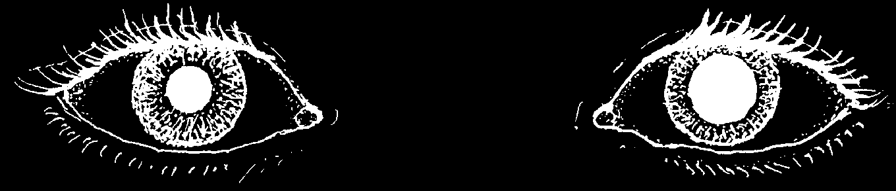
The pulse gets much faster with exercise and when a person is nervous, frightened, or has a fever. As a general rule, the pulse increases 20 beats per minute for each degree (°C) rise in fever.
When a person is very ill, take the pulse often and write it down along with the temperature and rate of breathing.
It is important to notice changes in the pulse rate. For example:
• A weak, rapid pulse can mean a state of shock (see p. 77).
• A very rapid, very slow, or irregular pulse could mean heart trouble
(see p. 325).
• A relatively slow pulse in a person with a high fever may be a sign of typhoid
(see p. 188).
EYES
Look at the color of the white part of the eyes. Is it normal, red (p. 219), or yellow?
Also note any changes in the sick person’s vision.
Have the person slowly move her eyes up and down and from side to side.
Jerking or uneven movement may be a sign of brain damage.
Pay attention to the size and color of the pupils (the black 'window’ in the center of the eye). If they are very large, it can mean a state of shock (see p. 77). If they are very large, or very small, it can mean poison or the effect of certain drugs. If there is a white glow, it can mean cataracts (see p. 225) or cancer.
Look at both eyes and note any difference between the two, especially in the size of the pupils:
A big difference in the size of the pupils is almost always a medical emergency.
• If the eye with the larger pupil hurts so badly it causes vomiting, the person probably has GLAUCOMA (see p. 222).
• If the eye with the smaller pupil hurts a great deal, the person may have
IRITIS, a very serious problem (see p. 221).
• Difference in the size of the pupils of an unconscious person or a person who has had a recent head injury may mean brain damage. It may also mean
STROKE (see p. 327).
Always compare the pupils of a person who is unconscious or has had a head injury.
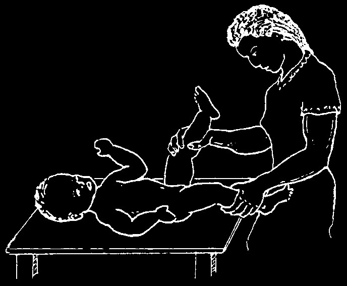

EARS, THROAT, AND NOSE
Ears: Always check for signs of pain and infection in the ears-especially in a child with fever or a cold. A baby who cries a lot or pulls at his ear may have an ear infection (p. 309).
Pull the ear gently. If this increases pain, the infection is probably in the tube of the ear (ear canal). Also look for redness or pus inside the ear.
A small flashlight or penlight will help. But never put a stick, wire, or other hard object inside the ear.
Find out if the person hears well, or if one side is more deaf than the other. Rub your thumb and fingers together near the person’s ear to see if he can hear it. For deafness and ringing of the ears see page 327.
Throat and Mouth: With a torch (flashlight) or sunlight examine the mouth and throat. To do this hold down tongue with a spoon handle or have the person say
'ahhhhh...’ Notice if the throat is red and if the tonsils (2 lumps at the back of the throat)
are swollen or have spots with pus (see p. 309). Also examine the mouth for sores, inflamed gums, sore tongue, rotten or abscessed teeth and other problems. (Read
Chapter 17.)
Nose: Is the nose runny or plugged? (Notice if and how a baby breathes through his nose.) Shine a light inside and look for mucus, pus, blood; also look for redness, swelling, or bad smell. Check for signs of sinus trouble or hayfever (p. 165).
SKIN
It is important to examine the sick person’s whole body, no matter how mild the sickness may seem. Babies and children should be undressed completely. Look carefully for anything that is not normal, including:
• sores, wounds, or splinters
• rashes or welts
• spots, patches, or any unusual markings • abnormal lumps or masses
• inflammation (sign of infection with
• unusual thinning or loss of hair, or redness, heat, pain and swelling)
loss of its color or shine (p. 112)
• swelling or puffiness
• loss of eyebrows
• swollen lymph nodes (little lumps in the
(leprosy? p. 191)
neck, the armpits, or the groin, see p. 88)
Always examine little children between the buttocks, in the genital area, between the fingers and toes, behind the ears, and in the hair (for lice, scabies, ringworm, rashes, and sores).
For identification of different skin problems, see pages 196 -198.
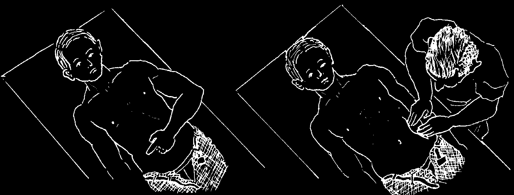

THE BELLY (ABDOMEN)
If a person has pain in the belly, try to find out exactly where it hurts.
Learn whether the pain is steady or whether it suddenly comes and goes, like cramps or colic.
When you examine the belly, first look at it for any unusual swelling or lumps.
The location of the pain often gives a clue to the cause (see the following page).
First, ask the person to
Then, beginning on the opposite side from the spot point with one finger where he has pointed, press gently on different where it hurts.
parts of the belly to see where it hurts most.
See if the belly is soft or hard and whether the person can relax his stomach muscles. A very hard belly could mean an acute abdomen—perhaps appendicitis or peritonitis (see p. 94).
If you suspect peritonitis or appendicitis, do the test for rebound pain described on page 95.
Feel for any abnormal lumps and hardened areas in the belly.
If the person has a constant pain in the stomach, with nausea, and has not been able to move her bowels, put an ear (or stethoscope) on the belly, like this:
Listen for gurgles in the intestines. If you hear nothing after about 2 minutes, this is a danger sign. (See Emergency
Problems of the Gut, p. 93.)
A silent belly is like a silent dog. Beware!


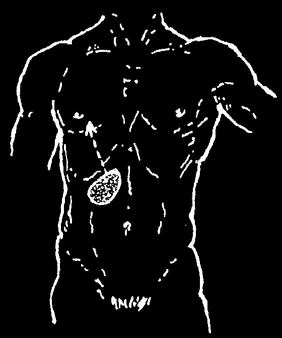


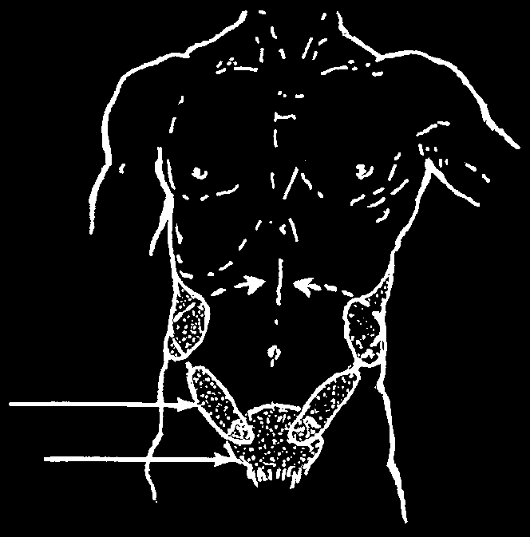
These pictures show the areas of the belly that usually hurt when a person has the following problems:
Ulcer
Appendicitis
(see p. 128)
(see p. 94)
pain in the
'pit of the first it stomach’
hurts here later it hurts here
Gallbladder
Liver
(see p. 329)
(see p. 172, 144, and 328)
the pain often reaches to the back pain here, at times it spreads to the chest
Urinary system
Inflammation or
(see p. 234)
tumor of the ovaries, mid or low back or out-of-place pain, often goes pregnancy around the waist
(see p. 280)
to the lower part of the belly pain on one side or both, sometimes urinary spreading to tubes the back bladder
Note: For different causes of back pain see p. 173.

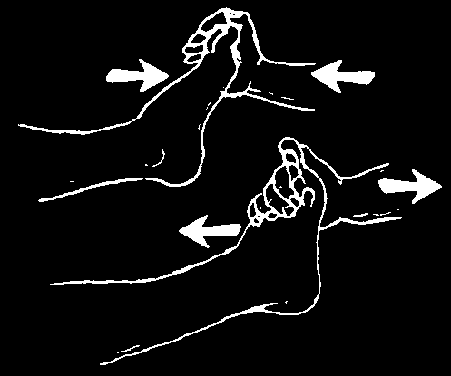


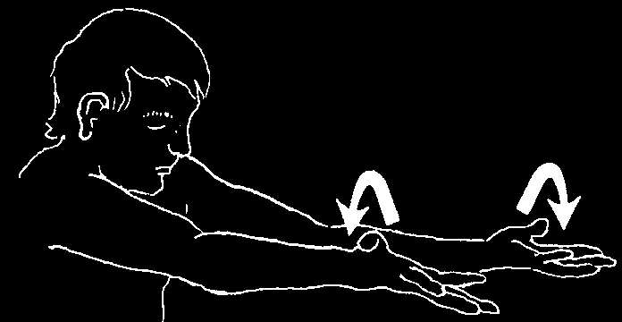

MUSCLES AND NERVES
If a person complains of numbness, weakness, or loss of control in part of his body, or you want to test it: notice the way he walks and moves. Have him stand, sit, or lie completely straight, and carefully compare both sides of his body.
Face: Have him smile, frown, open his eyes wide, and squeeze them shut. Notice any drooping or weakness on one side.
If the problem began more or less suddenly, think of a head injury (p. 91), stroke (p. 327), or Bell’s palsy (p. 327).
If it came slowly, it may be a brain tumor. Get medical advice.
Also check for normal eye movement, size of pupils (p. 217), and how well he can see.
Arms and legs: Look for loss of muscle. Notice—or measure— difference in thickness of arms or legs.
Watch how he moves and walks. If muscle loss or weakness affects the whole body, suspect malnutrition (p. 112) or a chronic (long-term) illness like tuberculosis.
Have him squeeze your and push and pull with his fingers to compare strength feet against your hand.
in his hands
Any string or ribbon will do to check if the distance around the arms or legs is different.
Also have him hold his arms straight
Have him lie down and lift one leg out and turn his hands up and down.
and then the other.
Note any weakness or trembling.
If muscle loss and weakness is uneven or worse on one side, in children, think first of polio (p. 314); in adults, think of a back problem, a back or head injury, or stroke.
For more information on muscle testing and physical examination of disabled persons, see Disabled Village Children, Chapter 4.
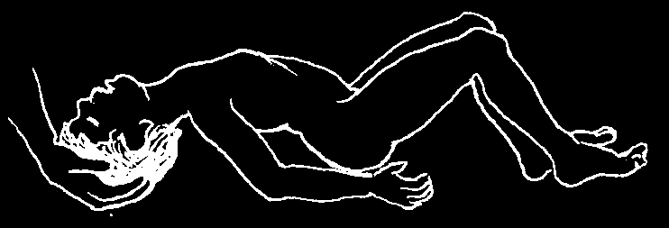


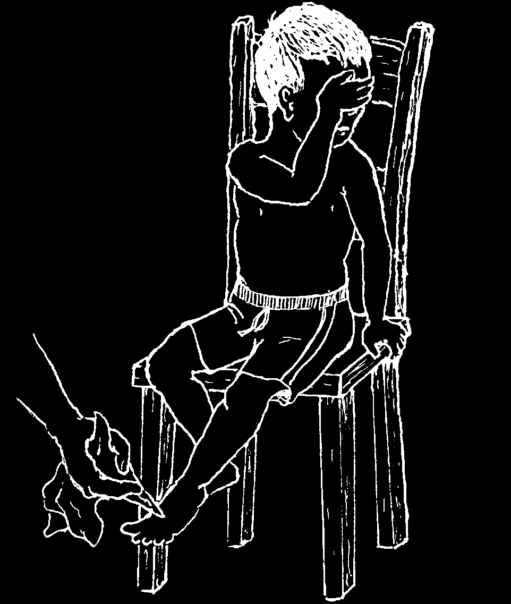
Check for stiffness or tightness of different muscles:
• If the jaw is stiff or will not open, suspect tetanus (p. 182) or a severe infection of the throat (p. 309) or of a tooth (p. 231). If the problem began after he yawned or was hit in the jaw, he may have a dislocated jaw.
• If the neck or back is stiff and bent backwards, in a very sick child, suspect meningitis. If the head will not bend forward or cannot be put between the knees, meningitis is likely (p. 185).
meningitis
• If a child always has some stiff muscles and makes strange or jerky movements, he may be spastic (p. 320).
• If strange or jerky movements come suddenly, with loss of consciousness, he may have seizures (p. 178). If seizures happen often, think of epilepsy.
If they happen when he is ill, the cause may be high fever (p. 76)
or dehydration (p. 151) or tetanus tetanus
(p. 182) or meningitis (p. 185).
To test a person’s reflexes when you suspect tetanus, see p. 183.
To check for loss of feeling in the hands, feet, or other parts of the body:
Have the person cover his eyes. Lightly touch or prick the skin in different places. Ask him to say 'yes’ when he feels it.
• Loss of feeling in or near spots or patches on the body is probably leprosy (p. 191).
• Loss of feeling in both hands or feet may be due to diabetes (p. 127)
or leprosy.
• Loss of feeling on one side only could come from a back problem
(p. 174) or injury.


CHAPTER
How to Take Care of a Sick Person
Sickness weakens the body. To gain strength and get well quickly, special care is needed.
The care a sick person receives is frequently the most important part of his treatment.
Medicines are often not necessary. But good care is always important. The following are the basis of good care:
1. The Comfort of the Sick Person
A person who is sick should rest in a quiet, comfortable place with plenty of fresh air and light. He should keep from getting too hot or cold. If the air is cold or the person is chilled, cover him with a sheet or blanket. But if the weather is hot or the person has a fever, do not cover him at all (see p. 75).
2. Liquids
In nearly every sickness, especially when there is fever or diarrhea, the sick person should drink plenty of liquids: water, tea, juices, broths, etc.
3. Personal Cleanliness
It is important to keep the sick person clean.
lukewarm
He should be bathed every day. If he is too water sick to get out of bed, wash him with a sponge or cloth and lukewarm water.
His clothes, sheets, and covers must also be kept clean. Take care to keep crumbs and bits of food out of the bed.
A SICK PERSON SHOULD
BE BATHED EACH DAY
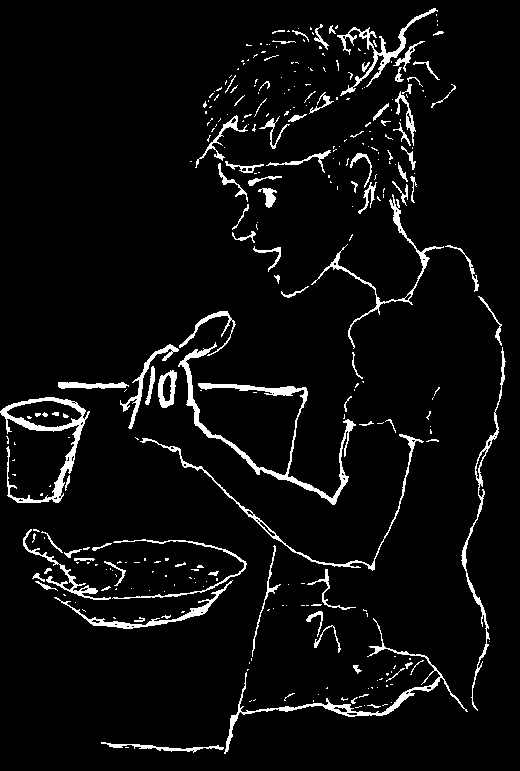
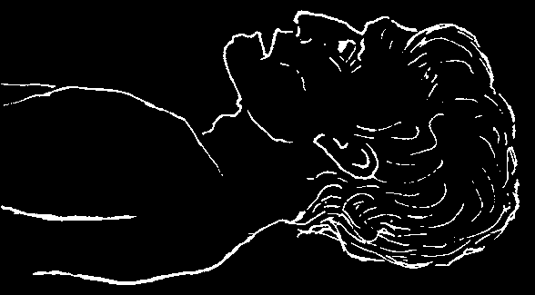